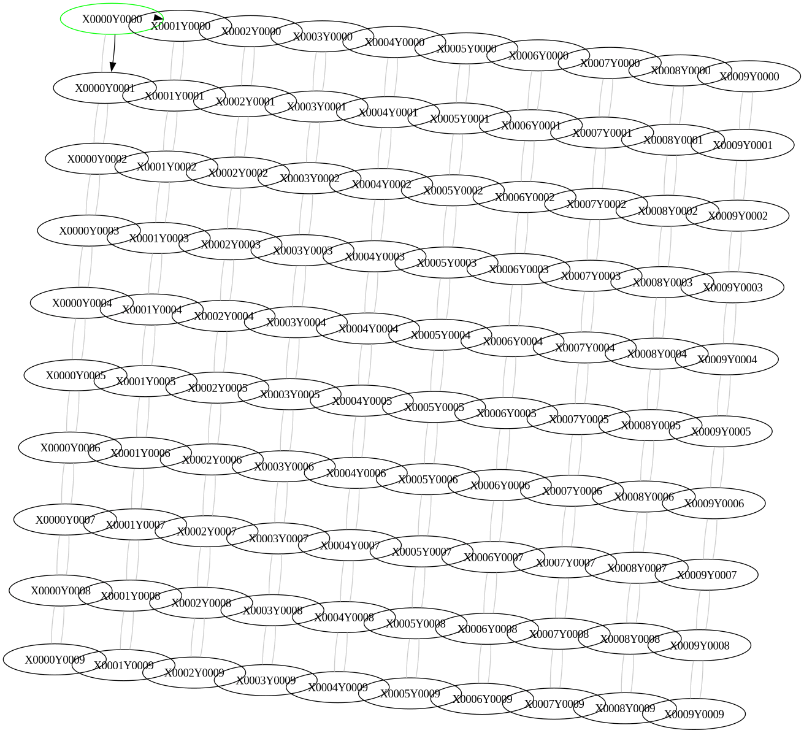
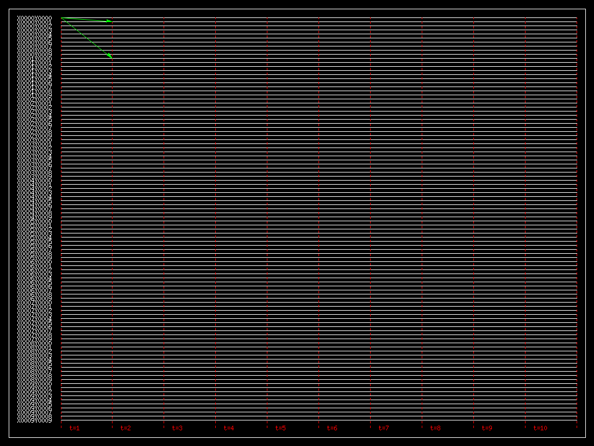

Dssim - Distributed systems simulator
This repo is reachable at https://github.com/mmirko/dssim.git
Dssim is a distributed system simulator that allows users to simulate the behavior of homogeneous agents that follow a protocol to achieve a common goal. The simulator is inspired by the textbook “Design and Analysis of Distributed Algorithms” by Nicola Santoro. The simulator is written in written in C/Lua/OpenCL.
As of now, the simulator is no longer maintained or developed and has been superseded by the herdsim simulator written in Pony.
Installation
In order to install the simulator, you need to have the following dependencies installed, all with the development environment as well:
- graphviz
- lua
- openCL
- mplayer (mencoder)
The simulator does not really require a proper installation process, as it is a simple C program that can be compiled with a simple make command.
To create the simulator executable, you need to run the following commands:
git clone https://github.com/mmirko/dssim.git
cd dssim
make
After the compilation, the simulations can be run directly using the Makefile inside one of the example directories. As described in the next section, the Makefile will generate the necessary input files and run the simulation.
Usage
Inside an example directory, there are several files that are used to run the simulation. All the examples share the same structure, ruled by a Makefile that is a symlink to the file ../MakefileProtoctol. The Makefile include the local configuration file local.mk that contains the configuration of the simulation. The configuration file contains the following variables:
NAMEThe name of the simulation.PROTOCOLThe name of the protocol to be used. Corresponds to the name of the Lua protocol file and the initial state file$PROTOCOL.initGRAPHThe name of the graph file to be used (without the .dot extension). The graph file is a DOT file that describes the graph of the simulation.SIMTIMEThe time of the simulation with the -t argument. For example -t 1000 means that the simulation will run for 1000 time units.RENDERERThe renderer to be used with the -T argument. The renderer is the graphviz renderer that will be used to render the graph of the simulation. For example, -T neato will use the neato renderer.BYPASSThe argument -b if the simulation should bypass the termination detection.
The files that are used to run the simulation are the following:
local.mkThe configuration file of the simulation previously described.protocolThe Lua file that contains the protocol of the agents. It ususally has no extension.protocol.initThe initial state of the agents. It is a Lua file that contains the initial state of the agents.graph.dotThe graph file that describes the graph of the simulation with the dot extension.
Once these files are in place, the simulation can be run with the following Makefile targets:
simulateRun the simulation with the configuration described in thelocal.mkfile. This is also the default target.video-graphGenerate a video of the graph of the simulation.video-tedGenerate a video of the TED diagram of the simulation.cleanClean the generated files of the simulation.
Other targets, more advanced, are available:
savekernelSave the OpenCL kernel of the simulation as generated by the Lua protocol file.usekernelUse the saved OpenCL kernel to run the simulation.platformShow the OpenCL platforms available in the system.devicesShow the OpenCL devices available in the system.regressionRun the regression tests of the simulation.regression-updateUpdate the regression tests of the simulation.
Example
An example of a simulation is the proto_flooding_lattice directory. The directory contains the execution of the flooding protocol in a grid of 10x10 nodes. The protocol file (flooding) is:
registers = { STATE = {"IDLE", "INIT", "DONE"}}
messtypes = { IMPULSE = {"YES"}, BROADCAST = {"SENT"} }
options = { "RESET_MESS" }
actions = {}
restrictions = { "T" }
actions[{"STATE_INIT","IMPULSE_YES"}] = [[
set STATE=DONE;
send BROADCAST=SENT to NOTSENDERS;
]]
actions[{"STATE_IDLE","BROADCAST_SENT"}] = [[
set STATE=DONE;
send BROADCAST=SENT to NOTSENDERS;
]]
The initial state file (flooding.init) is:
defaults = { "STATE_IDLE", "IMPULSE_NO" , "BROADCAST_NO"}
boundary = {}
boundary[0] = { ["X0000Y0000"] = {"STATE_INIT","IMPULSE_YES"} }
ending = {"STATE_DONE", "IMPULSE_NO" , "BROADCAST_NO" }
styles = { STATE_DONE = { color = "green" } , registers_default = { color = "black" } , BROADCAST_SENT = { arrowhead = "normal", arrowtail = "normal", color = "black" }, messages_default = { arrowhead = "none", arrowtail = "none", color = "grey80" } }
report = { "TIME_COMPLEXITY", "MESSAGE_COMPLEXITY" }
The local.mk file, the one that contains the configuration of the simulation, contains the following:
NAME=flooding_lattice
PROTOCOL=flooding
GRAPH=lattice10
SIMTIME=-t 100
RENDERER=-T neato
BYPASS=-b
The graph file (lattice10.dot) is a 10x10 grid of nodes. The graph in the example is the following:

To run the simulation and see all the logs, you can run the following command:
make simulate
To generate a video of the graph of the simulation, you can run the following command:
make video-graph
With this result, you can see the evolution of the graph of the simulation:

To generate a video of the TED diagram of the simulation, you can run the following command:
make video-ted
With this result, you can see the TED diagram of the simulation:
